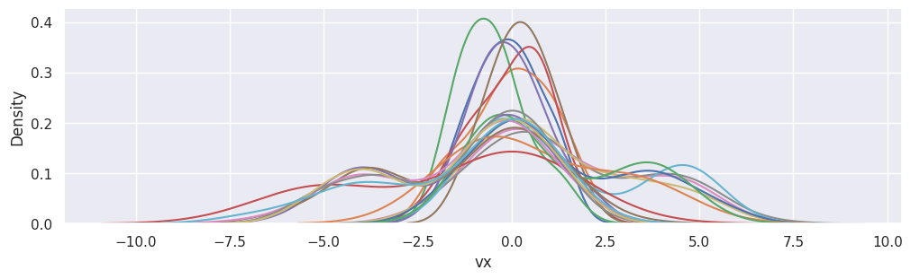
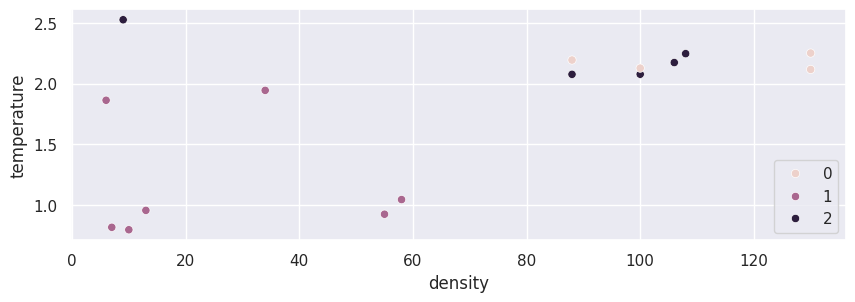
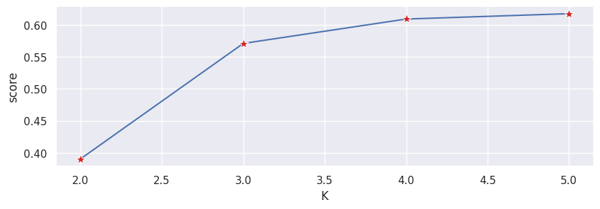
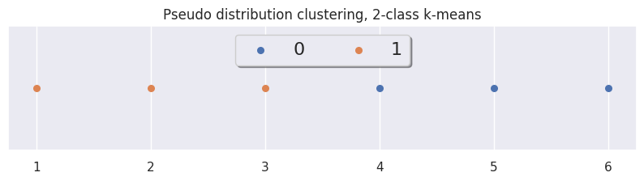
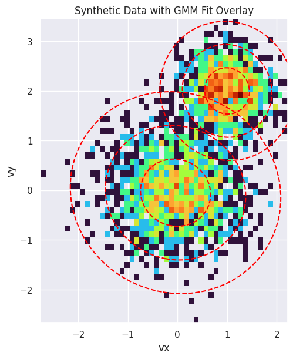
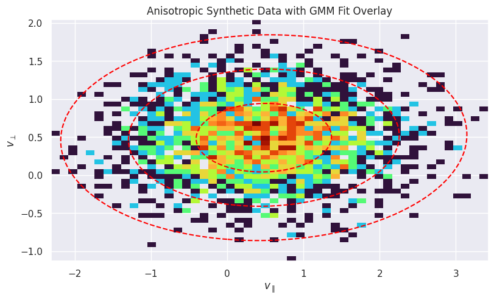

Clustering Workflow#
vdfpy takes velocity distribution functions (VDFs) from observation and simulation data, and clusters the distributions using unsupervised machine learning algorithms from sklearn and other population packages. We aim to provide uniform interfaces for data from different sources, and standard methods for training and evaluating the clustering performance. On the top level, the task is divided into several steps:
Data preparation
Data collection
Data cleaning
Feature engineering
Data splitting
Modeling
Hyperparameter tuning
Training
Predicting
Assessing performance
import numpy as np
import pandas as pd
import matplotlib.pyplot as plt
import seaborn as sns
import vdfpy
pd.set_option("display.max_rows", 10)
sns.set_theme(rc={'figure.figsize':(10, 3)})
Data Preparation#
Currently, we support VDF and plasma moment collection from simulation data of Vlasiator, and FLEKS, and observation data from MMS and MAVEN. For this tutorial, we generate pseudo-particle data from vdfpy.
from vdfpy.generator import make_clusters
df = make_clusters(n_clusters=3, n_dims=1, n_points=100, n_samples=20)
df
| class | particle velocity | density | bulk velocity | temperature | |
|---|---|---|---|---|---|
| 0 | 1 | vx 0 -1.248463 1 0.315876 2 -0.0... | 55.0 | -0.133188 | 0.925123 |
| 1 | 1 | vx 0 0.832104 1 1.341033 2 -0.3... | 73.0 | 0.053439 | 1.145172 |
| 2 | 1 | vx 0 -0.363396 1 -1.447450 2 -1.26416... | 7.0 | -0.507559 | 0.817420 |
| 3 | 1 | vx 0 2.084013 1 0.868963 2 0.9... | 58.0 | -0.001143 | 1.045667 |
| 4 | 1 | vx 0 0.416085 1 -0.881047 2 -0.4... | 13.0 | -0.029577 | 0.956832 |
| ... | ... | ... | ... | ... | ... |
| 15 | 3 | vx 0 -0.276718 1 -0.174665 2 ... | 108.0 | -1.216693 | 2.246867 |
| 16 | 3 | vx 0 -0.893873 1 -2.199742 2 ... | 106.0 | -1.373639 | 2.173536 |
| 17 | 3 | vx 0 -0.982473 1 1.256869 2 -0.2... | 100.0 | -1.272969 | 2.077400 |
| 18 | 3 | vx 0 1.071069 1 1.379493 2 ... | 145.0 | -1.307156 | 2.115447 |
| 19 | 3 | vx 0 -0.801690 1 1.133221 2 -0.1... | 45.0 | -1.314976 | 2.252691 |
20 rows × 5 columns
fig, ax = plt.subplots(figsize=(10, 3), layout="constrained")
[
sns.kdeplot(df["particle velocity"][i], x="vx", ax=ax)
for i in range(df["particle velocity"].size)
]
plt.show()

Normalizing the data#
When working with distance-based algorithms (e.g. k-Means), we must normalize the data. Otherwise, variables with different scaling will be weighted differently in the distance formula that is being optimized during training. For example, if we were to include velocity [km/s] in the cluster, in addition to density [amu/cc] and pressure [nPa], density would have an outsized impact on the optimizations because its scale is significantly larger and wider than the bounded location variables.
We first set up training and test splits using train_test_split from sklearn.
from sklearn.model_selection import train_test_split
X_train, X_test, y_train, y_test = train_test_split(
df[["density", "bulk velocity", "temperature"]],
df[["class"]],
test_size=0.2,
random_state=0,
)
Next, we normalize the training and test data using the preprocessing.normalize method from sklearn.
from sklearn.preprocessing import StandardScaler
scaler = StandardScaler()
# Scale the moments
X_train_norm = scaler.fit_transform(X_train)
X_test_norm = scaler.fit_transform(X_test)
sklearn provides several methods for data normalization and scaling. Check the documentation for more details.
Modeling#
Fitting the model#
For the first iteration, we will arbitrarily choose a number of clusters of 3. Building and fitting models in sklearn is very simple. We will create an instance of KMeans, define the number of clusters using the n_clusters attribute, set n_init, which defines the number of iterations the algorithm will run with different centroid seeds, to “auto”, and we will set the random_state to 0 so we get the same result each time we run the code. We can then fit the model to the normalized training data using the fit() method.
from sklearn.cluster import KMeans
kmeans = KMeans(n_clusters=3, random_state=0, n_init="auto")
kmeans.fit(X_train_norm)
KMeans(n_clusters=3, random_state=0)In a Jupyter environment, please rerun this cell to show the HTML representation or trust the notebook.
On GitHub, the HTML representation is unable to render, please try loading this page with nbviewer.org.
Parameters
Once the data are fit, we can access labels from the labels_ attribute.
Evaluating the model#
Below, we visualize the data we just fit.
import seaborn as sns
sns.scatterplot(data=X_train, x="density", y="temperature", hue=kmeans.labels_)
plt.show()

We can evaluate performance of the clustering algorithm using a Silhouette score which is a part of sklearn.metrics where a higher score (upper limit 1) represents a better fit.
from sklearn.metrics import silhouette_score
silhouette_score(X_train_norm, kmeans.labels_, metric="euclidean")
0.5711982849451398
Choosing the best number of clusters#
The weakness of k-means clustering is that we don’t know how many clusters we need by just running the model. We need to test ranges of values and make a decision on the best value of k. We typically make a decision using the Elbow method to determine the optimal number of clusters where we are both not overfitting the data with too many clusters, and also not underfitting with too few.
We create the below loop to test and store different model results so that we can make a decision on the best number of clusters.
K = range(2, 6)
fits = []
score = []
# Train the model for current value of k on training data, and append to lists
for k in K:
model = KMeans(n_clusters=k, random_state=0).fit(X_train_norm)
fits.append(model)
score.append(silhouette_score(X_train_norm, model.labels_, metric="euclidean"))
results_eval = pd.DataFrame({"K": K, "score": score})
Typically, as we increase the value of K, we see improvements in clusters and what they represent until a certain point. We then start to see diminishing returns or even worse performance. We can visually see this to help make a decision on the value of k by using an elbow plot where the y-axis is a measure of goodness of fit and the x-axis is the value of k.
sns.lineplot(results_eval, x="K", y="score", marker='*', markersize=10, markerfacecolor="tab:red")
plt.show()

We typically choose the point where the improvements in performance start to flatten or get worse.
When will k-means cluster analysis fail?#
K-means clustering performs best on data that are spherical. Spherical data are data that group in space in close proximity to each other either. This can be visualized in 2 or 3 dimensional space more easily. Data that aren’t spherical or should not be spherical do not work well with k-means clustering. For example, k-means clustering would not do well on the below data as we would not be able to find distinct centroids to cluster the two circles or arcs differently, despite them clearly visually being two distinct circles and arcs that should be labeled as such.
Quick Demo#
df = make_clusters(n_clusters=2, n_dims=1, n_points=1000, n_samples=6)
from sklearn.preprocessing import StandardScaler
scaler = StandardScaler()
# Scale the moments
data_scaled = scaler.fit_transform(df.iloc[:, 2:])
df_scaled = pd.DataFrame(data_scaled)
df_scaled
| 0 | 1 | 2 | |
|---|---|---|---|
| 0 | 0.135631 | -0.926586 | -1.084261 |
| 1 | -0.411035 | -1.089314 | -1.008303 |
| 2 | -1.404973 | -0.977909 | -0.900883 |
| 3 | -0.637777 | 1.078229 | 0.919802 |
| 4 | 1.769417 | 0.933053 | 1.042857 |
| 5 | 0.548737 | 0.982527 | 1.030789 |
method = "kmeans"
labels = vdfpy.cluster(df_scaled, n_clusters=2, method=method)
# clusters: 2; # samples: 6; # features: 3
xrange = np.linspace(1, labels.size, labels.size)
ylocs = np.zeros(labels.size)
fig, ax = plt.subplots(figsize=(10, 2))
for g in np.unique(labels):
ix = np.where(labels == g)
ax.scatter(xrange[ix], ylocs[ix], label=g, s=30)
ax.get_yaxis().set_visible(False)
ax.legend(loc="upper center", fancybox=True, shadow=True, ncol=4, fontsize=16)
ax.set_title('Pseudo distribution clustering, 2-class k-means')
plt.show()

GMM Fitting#
To demonstrate the capability of the GMM fitting and parameter extraction, we can create a synthetic dataset of particles with known properties, fit a GMM to it, and verify that the extracted parameters match the input parameters.
from scipy.stats import multivariate_normal
from matplotlib.colors import LogNorm
from sklearn.mixture import GaussianMixture
from vdfpy.generator import generate_synthetic_gmm_data, compare_gmm_results
# Define original parameters for comparison
params_isotropic = [
{"center": np.array([0.0, 0.0]), "temp": 0.5},
{"center": np.array([1.0, 2.0]), "temp": 0.2},
]
# Define the parameters for two synthetic Maxwellian distributions
components_isotropic = [
{
"n_samples": 1500,
"mean": params_isotropic[0]["center"],
"cov": np.array(
[[params_isotropic[0]["temp"], 0], [0, params_isotropic[0]["temp"]]]
),
},
{
"n_samples": 1000,
"mean": params_isotropic[1]["center"],
"cov": np.array(
[[params_isotropic[1]["temp"], 0], [0, params_isotropic[1]["temp"]]]
),
},
]
# Generate the synthetic data using the utility function
synthetic_data = generate_synthetic_gmm_data(components_isotropic, random_state=0)
print(f"Shape of the synthetic dataset: {synthetic_data.shape}")
Shape of the synthetic dataset: (2500, 2)
Fit a GMM to the synthetic data with 2 components:
gmm_synthetic = GaussianMixture(n_components=2, random_state=0)
gmm_synthetic.fit(synthetic_data)
GaussianMixture(n_components=2, random_state=0)In a Jupyter environment, please rerun this cell to show the HTML representation or trust the notebook.
On GitHub, the HTML representation is unable to render, please try loading this page with nbviewer.org.
Parameters
Compare the results. Since the synthetic data was generated with \(m=1\) and \(k_B=1\), the temperature is numerically equal to the variance, so we can compare directly.
compare_gmm_results(params_isotropic, gmm_synthetic, isotropic=True)
--- Original Synthetic Data Parameters ---
Population 1: Center = [0.0, 0.0], Temperature = 0.5
Population 2: Center = [1.0, 2.0], Temperature = 0.2
--- GMM Extracted Parameters ---
Component 1: Center = [1.00069, 2.0008], v_th_sq = 0.21018
Component 2: Center = [-0.03793, -0.04825], v_th_sq = 0.47898
Finally, we visualize the result. The plot below shows a 2D histogram of the synthetic particle data, with the fitted GMM components overlaid as red dashed ellipses. The ellipses represent the 1, 2, and 3-sigma contours of the Gaussian distributions, clearly showing how the GMM has identified the two distinct populations in the data.
fig, ax = plt.subplots(figsize=(8, 6), constrained_layout=True)
# Plot the 2D histogram of the synthetic data
ax.hist2d(
synthetic_data[:, 0],
synthetic_data[:, 1],
bins=50,
norm=LogNorm(),
cmap="turbo",
density=True,
)
ax.set_title("Synthetic Data with GMM Fit Overlay")
ax.set_xlabel("vx")
ax.set_ylabel("vy")
# Create a meshgrid for contour plotting
x = np.linspace(synthetic_data[:, 0].min(), synthetic_data[:, 0].max(), 100)
y = np.linspace(synthetic_data[:, 1].min(), synthetic_data[:, 1].max(), 100)
X, Y = np.meshgrid(x, y)
pos = np.dstack((X, Y))
# Overlay the GMM contours
for i in range(gmm_synthetic.n_components):
mean = gmm_synthetic.means_[i]
cov = gmm_synthetic.covariances_[i]
rv = multivariate_normal(mean, cov)
levels = rv.pdf(mean) * np.exp(-0.5 * np.array([1.0, 2.0, 3.0]) ** 2)
ax.contour(X, Y, rv.pdf(pos), levels=np.sort(levels), colors="red", linestyles="--")
ax.set_aspect("equal", "box")
plt.show()

Anisotropic Example#
Now, let’s do the same for an anisotropic distribution, where the temperature is different in different directions. This is common in magnetized plasmas, where temperature is often described in terms of \(T_\parallel\) and \(T_\perp\) with respect to the magnetic field.
# Define original parameters for comparison
params_anisotropic = [
{
"center": np.array([0.5, 0.5]),
"temp_parallel": 0.8,
"temp_perp": 0.2,
}
]
# Define parameters for a synthetic anisotropic distribution
components_anisotropic = [
{
"n_samples": 2500,
"mean": params_anisotropic[0]["center"],
"cov": np.array(
[
[params_anisotropic[0]["temp_parallel"], 0],
[0, params_anisotropic[0]["temp_perp"]],
]
),
}
]
# Generate the synthetic data
anisotropic_data = generate_synthetic_gmm_data(
components_anisotropic, shuffle=False, random_state=42
)
Fit the GMM:
gmm_anisotropic = GaussianMixture(n_components=1, random_state=0)
gmm_anisotropic.fit(anisotropic_data)
compare_gmm_results(params_anisotropic, gmm_anisotropic, isotropic=False)
--- Original Synthetic Data Parameters ---
Population 1: Center = [0.5, 0.5], Temp Parallel = 0.8, Temp Perp = 0.2
--- GMM Extracted Parameters ---
Component 1: Center = [0.48075, 0.49185], v_th_sq_parallel = 0.78808, v_th_sq_perp = 0.20246
Plot the 2D histogram of the synthetic anisotropic data:
fig, ax = plt.subplots(figsize=(8, 6), constrained_layout=True)
ax.hist2d(
anisotropic_data[:, 0],
anisotropic_data[:, 1],
bins=50,
norm=LogNorm(),
cmap="turbo",
density=True,
)
ax.set_title("Anisotropic Synthetic Data with GMM Fit Overlay")
ax.set_xlabel(r"$v_{\parallel}$")
ax.set_ylabel(r"$v_{\perp}$")
# Create a meshgrid for contour plotting
x = np.linspace(anisotropic_data[:, 0].min(), anisotropic_data[:, 0].max(), 100)
y = np.linspace(anisotropic_data[:, 1].min(), anisotropic_data[:, 1].max(), 100)
X, Y = np.meshgrid(x, y)
pos = np.dstack((X, Y))
# Overlay the GMM contours
for i in range(gmm_anisotropic.n_components):
mean = gmm_anisotropic.means_[i]
cov = gmm_anisotropic.covariances_[i]
rv = multivariate_normal(mean, cov)
levels = rv.pdf(mean) * np.exp(-0.5 * np.array([1.0, 2.0, 3.0]) ** 2)
ax.contour(X, Y, rv.pdf(pos), levels=np.sort(levels), colors="red", linestyles="--")
ax.set_aspect("equal", "box")
plt.show()
